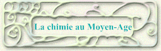
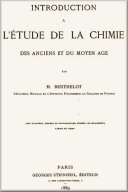
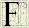
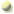
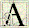
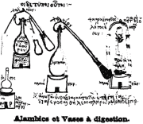
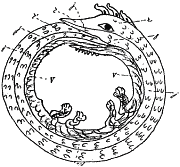
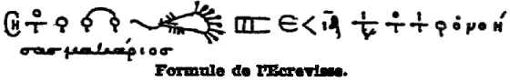
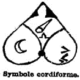

 |
|
|
 |
Livre II : Introduction à l'étude de la chimie des Anciens et du Moyen-Age  amiliarisé avec les langues anciennes, Berthelot avait une compétence unique pour étudier l'histoire de la chimie dans l'Antiquité. Dans les origines de la chimie, il a montré que l'alchimie était fondée sur une doctrine philosophique, celle de l'unité de la matière envisagée comme formée de quatre éléments. Sa pratique reposait sur les expériences réelles que faisaient les orfèvres et les métallurgistes gréco-égyptiens. C'est ce qu'il a complètement établi dans Introduction à l'étude de la chimie des Anciens et du Moyen-Age par l'étude comparative d'un papyrus trouvé à Thèbes et des recettes du pseudo-Démocrite. Berthelot a été conduit par là à publier les textes alchimistes grecs, syriaques et arabes, qui jusqu'ici étaient demeurés inédits, avec la collaboration de linguistes distingués : MM. Charles-Émile Rouelle pour le grec, Rubens Duval pour le syriaque et Octave Boudas pour l'arabe. Ainsi s'est trouvée reconstituée toute une branche des sciences de l'Antiquité, presque inconnue jusqu'alors.
 Extraits de la préface de Berthelot
 u début, j'explique comment l'alchimie, cette science en partie réelle, en partie chimérique, est sortie des pratiques des orfèvres et métallurgistes égyptiens. En effet la fabrication de l'asèm ou électrum, alliage qui a été regardé comme un métal distinct jusqu'au VIe siècle de notre ère ; celle de l'or à bas titre, par l'addition au métal pur du cuivre et de l'étain ; celle des alliages métalliques à base de cuivre, destinés à imiter l'or et à le falsifier, ont fait naître dans l'esprit des opérateurs d'autrefois l'espérance de reproduire l'or lui-même, par des mélanges convenables. Le manipulateur appelait d'ailleurs à son secours, suivant l'usage antique de l'Egypte et de Babylone, les puissances divines, évoquées par des formules magiques. Le Papyrus X de Leyde n'est autre chose que l'un des cahiers de recettes de ces vieux praticiens, arrivé jusqu'à nous à travers les âges. C'est par la traduction, le commentaire, l'étude détaillée de ce papyrus que commence cette Introduction à l'étude de la chimie des Anciens et du Moyen-Age. […] Je donne dans le présent volume les dessins des appareils des alchimistes grecs, reproduits par la photogravure, et constituant 35 figures, telles qu'elles existent dans les manuscrits, en marge de leur description ; j'explique en détail l'usage et la destination de ces appareils. Je retrouve ainsi l'explication des pratiques fondamentales suivies par ces premiers alchimistes, pour modifier et teindre les métaux, teinture qui était réputée le prélude et l'accompagnement nécessaire de la transmutation. On y verra comment les premiers appareils distillatoires, inventés vers les débuts de l'ère chrétienne (Chrysopée de Cléopâtre), sont figurés dans les manuscrits et associés au Serpent mystérieux qui se mord la queue, image du monde et de l'alchimie, ainsi qu'aux axiomes mystiques sur l'unité de la matière. J'ai commenté tous ces dessins, à la fois scientifiques et symboliques, et j'ai donné l'interprétation des opérations auxquelles les appareils étaient affectés. […] Les signes et notations alchimiques m'ont paru ne pouvoir être reproduits avec précision que par la photogravure des pages des principaux manuscrits qui les contiennent : l'un, le plus ancien de tous (ms. 299 de St-Marc, Venise), remonte au XIe siècle ; l'autre (ms. 2327 de la Bibliothèque Nationale) est du XVe siècle. Je donne dans le présent volume huit planches, reproduisant ces signes et j'en présente la traduction et le commentaire détaillé : commentaire qui complète sur certains points le chapitre relatif aux relations des métaux et des planètes.  J'ai fait suivre ces figures d'un travail étendu sur les manuscrits alchimiques et sur leur filiation : ce travail m'a paru nécessaire pour fixer le degré de confiance que nous devons attacher aux écrits qui nous apportent leur témoignage pour la connaissance des doctrines et des pratiques antiques. J'ai réussi à les corroborer à divers égards par des documents plus certains. En effet aux notions révélées par les écrits alchimiques j'ai pu joindre des renseignements positifs, que j'ai tirés de l'étude et de l'analyse chimique directe de métaux et minéraux provenant de la Chaldée, et spécialement des tablettes trouvées dans un coffre de pierre, sous les fondations du palais de Sargon, à Khorsabad. Enfin, j'ai réuni sous le titre de Notices de Minéralogie, de Métallurgie et diverses, tout un ensemble de renseignements extraits, les uns des auteurs anciens, tels que : Aristote, Théophraste, Dioscoride, Vitruve, Strabon, Pline, Solin, etc. ; les autres des auteurs du moyen âge, Arabes et Latins, et en particulier de Geber, d'Avicenne, du Pseudo-Aristote, de Roger Bacon.[…] Ces renseignements éclairent une multitude de points dans les écrits des alchimistes grecs et ils montrent jusqu'à quel point leur tradition, pratique et théorique, s'est conservée jusqu'aux temps modernes.
Sommaire 
Internet
Une version électronique de ce livre est consultable et téléchargeable sur gallica.bnf.fr.
|
|
Accueil · Biographie · Livre I · Livre II · Livre III |